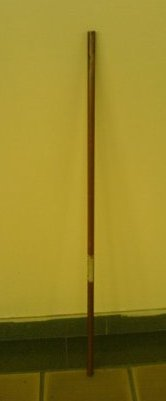
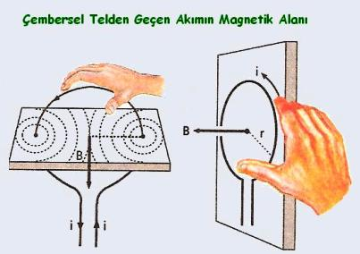
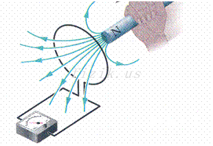

Lenz yasasını ve elektromanyetik indüksiyonu gözlemlemek.

Bakır boru dik tutulur ve mıknatıs içine bırakılır.
Mıknatısın yavaş düşmesi gözlemlenir.
Manyetik akı değiştiğinde iletken içinde akım oluşur. Bu olaya elektromanyetik indüksiyon denir.

Oluşan akım, Lenz yasasına göre değişime karşı koyan bir manyetik alan oluşturur.

Bu nedenle mıknatısın hareketine zıt yönde bir kuvvet oluşur ve düşüş yavaşlar.
Solda serbest düşüş, sağda Lenz yasası etkisiyle yavaşlayan mıknatıs görülmektedir.
Sağ tarafta oluşan indüksiyon akımları mıknatısın hareketine karşı koyar ve düşüş süresini artırır.